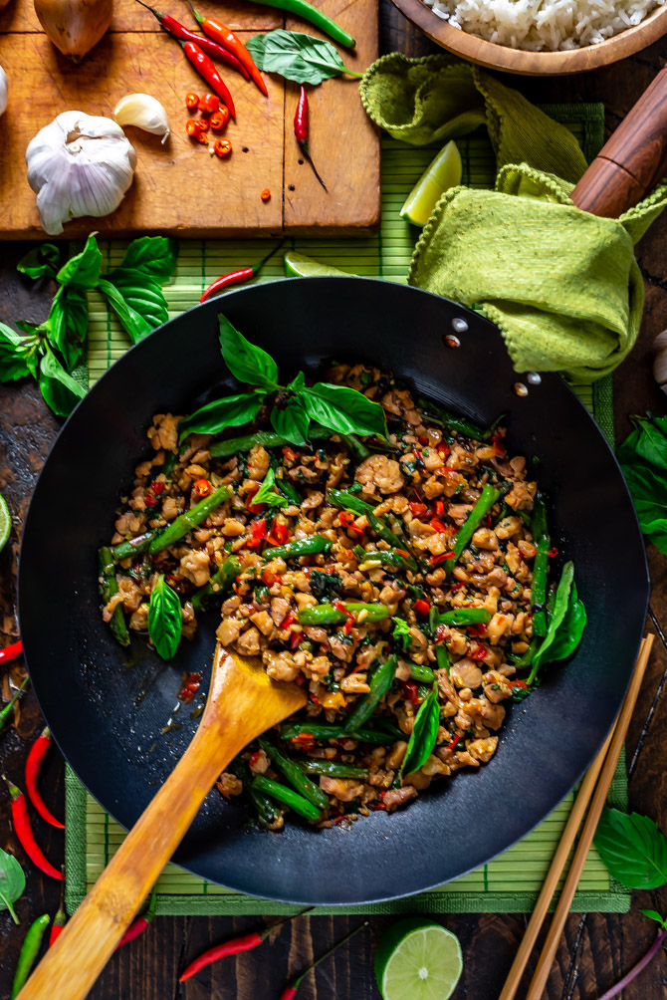

Thai Basil Chicken

How To Make The Best Thai Basil Chicken
Thai basil chicken, better known in Thai as pad kra pao gai (ผัดกระเพราไก่ pad ka prao gai), is a contender for the most popular, and the most beloved Thai street food dish of all time.
Ingredients
- Egg
- Chicken breast
- Garlic
- Thai-Chilies
- Soy Sauce
Steps
First we need to fry the egg
- Heat about 2 tablespoons of vegetable oil in a wok or frying pan on high-medium heat.
- When the oil is hot and sizzling, drop in the egg. Let it sizzle and bubble up, and at the same time, splash some of the hot oil onto the top of the egg (don't flip the egg, unless you really want to).
- After the egg looks about right to your cooked likeness (I like mine runny), take it out, drain the excess oil, and put it on a plate for later.
Basil chicken
- Cut the chicken into small bite sized pieces.
- Rinse and peel the garlic and chilies, and pound them in a mortar and pestle (alternatively you can just mince them with a knife). They don't need to be super fine, you just want to bring out the oils and flavors from the garlic and chilies.
- Pluck a good sized handful of holy basil leaves off the stems.
- Now it's time to start cooking. Heat your wok on high heat, and add about 1 tablespoon of oil to the pan.
- When the oil is hot, add the chilies and garlic. Stir fry them for about 20 seconds or so until they get really fragrant, but don't let them burn or get too dry.
- Toss in your chicken. Keep stir frying continuously. At this stage you want to continue to stir and cook your chicken until it's just about fully cooked all the way through (depending on the size pieces of chicken and how hot your fire is, it should take about 2 - 3 minutes). If it starts to get dry, add just a tiny splash of water.
- Add 1 teaspoon of oyster sauce, ½ teaspoon light soy sauce, ½ teaspoon sugar, and finally a splash of dark soy sauce. Keep stir frying for about another 30 seconds.
- Grab a handful of holy basil, toss it into the pan, fold it into the chicken, and then immediately turn off the heat (if you're using an electric stove, you'll want to remove the pan from the burner). The holy basil really only needs to cook for about 5 seconds, and it will continue to wilt and cook from the existing heat of the chicken. This step is important because if you cook the basil for too long, it loses some of its glorious flavor and gets slightly chewy.
Go back to see more